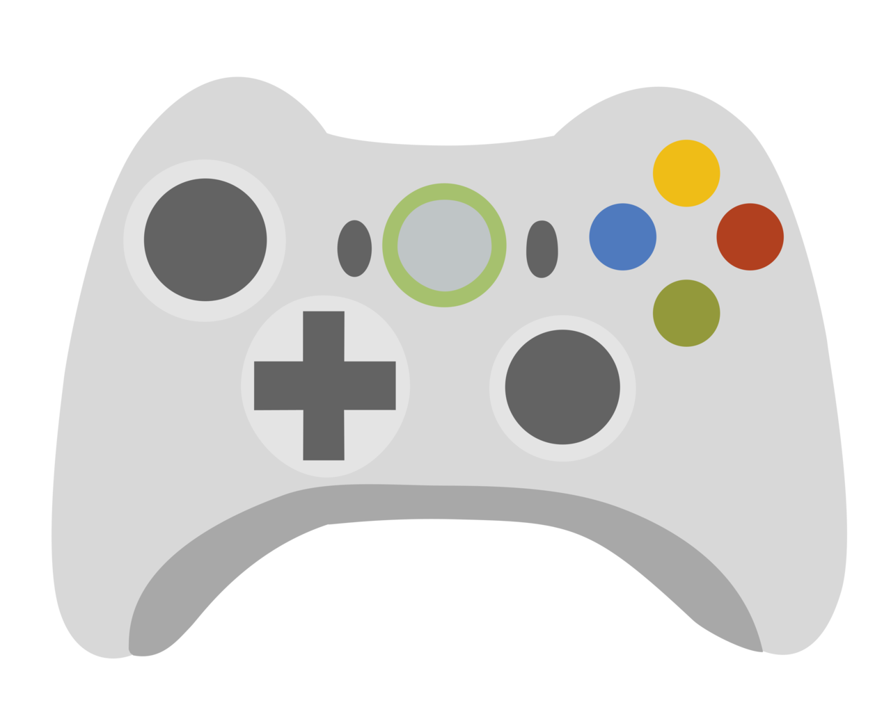

The following activity is focused for the science day focused for the whole community Saucistas, is carried out in two parts, primary and high school stages. Where primary school is a story and high school is a summary of the history of video games. Where our 11th graders created this website with a video game platform and in turn learning platform where students can interact with a game that is moving forward as it answers questions, based on the reading levels we have at the time of our (prueba saber once). This is a brief account of what you will find in this super video-educational activity for our continuous learning.
